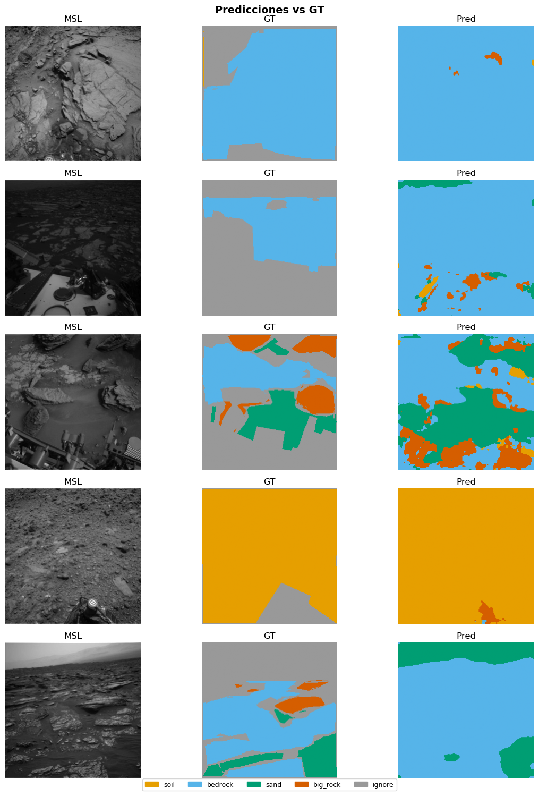

03c — MarsSeg#
Paper: Li et al., arXiv:2404.04155, Beihang University 2024
0. Configuración#
import sys; sys.path.append('.')
import torch, torch.nn as nn, torch.nn.functional as F
import pandas as pd, numpy as np
from mars_utils_fast import (
set_seed, get_or_create_split, build_dataloaders,
run_multi_seed, append_benchmark_results,
visualize_predictions, count_parameters,
FocalDiceLoss, NUM_CLASSES, IGNORE_INDEX
)
set_seed()
device = "cuda" if torch.cuda.is_available() else "cpu"
print(f"Device: {device}")
MODEL_NAME = "marsseg"
Device: cuda
1. Dataset#
df = pd.read_csv("processed/manifest_256.csv")
df_train, df_val, df_test = get_or_create_split(df)
train_loader, val_loader, test_loader = build_dataloaders(
df_train, df_val, df_test, batch_size=8, num_workers=0
)
✅ Split cargado desde processed\split_indices.pkl
Train: 16074 {'MSL': 15901, 'MER': 173}
Val : 3443 {'MSL': 3443}
Test : 3448 {'MSL': 3448}
2. Arquitectura MarsSeg#
Encoder ResNet-50 + MiniASPP + PSA + SPPM + Decoder con skip connections. Focal-Dice loss para manejo del desbalance extremo de big_rock.
import torchvision.models as tvm
class MiniASPP(nn.Module):
"""Mini Atrous Spatial Pyramid Pooling con rates [1,6,12] + GAP."""
def __init__(self, in_ch, out_ch):
super().__init__()
self.b0 = nn.Sequential(nn.Conv2d(in_ch,out_ch,1,bias=False),nn.BatchNorm2d(out_ch),nn.ReLU(True))
self.b1 = nn.Sequential(nn.Conv2d(in_ch,out_ch,3,padding=6,dilation=6,bias=False),nn.BatchNorm2d(out_ch),nn.ReLU(True))
self.b2 = nn.Sequential(nn.Conv2d(in_ch,out_ch,3,padding=12,dilation=12,bias=False),nn.BatchNorm2d(out_ch),nn.ReLU(True))
self.gap = nn.Sequential(nn.AdaptiveAvgPool2d(1),nn.Conv2d(in_ch,out_ch,1,bias=False),nn.BatchNorm2d(out_ch),nn.ReLU(True))
self.fuse= nn.Sequential(nn.Conv2d(out_ch*4,out_ch,1,bias=False),nn.BatchNorm2d(out_ch),nn.ReLU(True))
def forward(self,x):
b0=self.b0(x); b1=self.b1(x); b2=self.b2(x)
bg=F.interpolate(self.gap(x),size=x.shape[-2:],mode='bilinear',align_corners=False)
return self.fuse(torch.cat([b0,b1,b2,bg],dim=1))
class PSA(nn.Module):
"""Polarized Self-Attention: channel + spatial attention."""
def __init__(self, ch):
super().__init__()
self.ch_pool=nn.AdaptiveAvgPool2d(1)
r=max(ch//4,1)
self.ch_fc=nn.Sequential(nn.Linear(ch,r),nn.ReLU(),nn.Linear(r,ch),nn.Sigmoid())
self.sp_conv=nn.Conv2d(ch,1,1)
def forward(self,x):
B,C,H,W=x.shape
ca=self.ch_pool(x).view(B,C)
ca=self.ch_fc(ca).view(B,C,1,1)
sa=torch.sigmoid(self.sp_conv(x))
return x*ca*sa
class SPPM(nn.Module):
"""Strip Pyramid Pooling Module: pooling horizontal + vertical."""
def __init__(self,ch):
super().__init__()
self.hp=nn.AdaptiveAvgPool2d((1,None))
self.vp=nn.AdaptiveAvgPool2d((None,1))
self.conv=nn.Sequential(nn.Conv2d(ch,ch,1,bias=False),nn.BatchNorm2d(ch),nn.ReLU(True))
def forward(self,x):
B,C,H,W=x.shape
h=F.interpolate(self.hp(x),size=(H,W),mode='bilinear',align_corners=False)
v=F.interpolate(self.vp(x),size=(H,W),mode='bilinear',align_corners=False)
return self.conv(x+h+v)
class ConvBnRelu(nn.Sequential):
def __init__(self,i,o,k=3,p=1):
super().__init__(nn.Conv2d(i,o,k,padding=p,bias=False),nn.BatchNorm2d(o),nn.ReLU(True))
class MarsSeg(nn.Module):
"""
Encoder: ResNet-50 con dilation en layer4 (preserva resolución).
Feature Enhancement: MiniASPP + PSA (shadow) + SPPM (deep).
Decoder: upsampling progresivo con skip connections.
"""
def __init__(self, num_classes=NUM_CLASSES):
super().__init__()
bb = tvm.resnet50(weights=tvm.ResNet50_Weights.DEFAULT)
# Encoder
self.layer0 = nn.Sequential(bb.conv1,bb.bn1,bb.relu,bb.maxpool) # /4
self.layer1 = bb.layer1 # /4 , 256ch
self.layer2 = bb.layer2 # /8 , 512ch
self.layer3 = bb.layer3 # /16 , 1024ch
# layer4 con dilation=2 para mantener /16
bb.layer4[0].conv2.stride=(1,1)
bb.layer4[0].downsample[0].stride=(1,1)
for m in bb.layer4.modules():
if isinstance(m,nn.Conv2d) and m.kernel_size==(3,3):
m.dilation=(2,2); m.padding=(2,2)
self.layer4 = bb.layer4 # /16 , 2048ch
# Feature Enhancement
self.aspp = MiniASPP(2048, 256)
self.psa = PSA(256)
self.sppm = SPPM(256)
self.ctx = ConvBnRelu(256*3, 256, k=1, p=0)
# Decoder
self.up3 = ConvBnRelu(256+1024, 256)
self.up2 = ConvBnRelu(256+512, 128)
self.up1 = ConvBnRelu(128+256, 64)
self.head = nn.Conv2d(64, num_classes, 1)
def forward(self,x):
s0=self.layer0(x)
s1=self.layer1(s0) # /4
s2=self.layer2(s1) # /8
s3=self.layer3(s2) # /16
s4=self.layer4(s3) # /16
a=self.aspp(s4); p=self.psa(a); sp=self.sppm(a)
ctx=self.ctx(torch.cat([a,p,sp],dim=1))
def up(x,skip,conv):
x=F.interpolate(x,size=skip.shape[-2:],mode='bilinear',align_corners=False)
return conv(torch.cat([x,skip],dim=1))
x=up(ctx,s3,self.up3)
x=up(x, s2,self.up2)
x=up(x, s1,self.up1)
x=F.interpolate(x,size=(x.shape[2]*4,x.shape[3]*4),mode='bilinear',align_corners=False)
return self.head(x)
def build_marsseg():
return MarsSeg(NUM_CLASSES)
model=build_marsseg().to(device)
params_M=count_parameters(model)
print(f"Parámetros: {params_M:.2f}M")
with torch.no_grad():
dummy=torch.randn(2,3,256,256).to(device)
print(f"Output: {model(dummy).shape}")
Downloading: "https://download.pytorch.org/models/resnet50-11ad3fa6.pth" to C:\Users\User/.cache\torch\hub\checkpoints\resnet50-11ad3fa6.pth
100%|██████████| 97.8M/97.8M [00:02<00:00, 44.8MB/s]
Parámetros: 38.61M
Output: torch.Size([2, 4, 256, 256])
3. Entrenamiento (3 seeds)#
SGD + PolynomialLR, Focal-Dice loss
import torch.optim as optim
def criterion_fn():
return FocalDiceLoss(alpha=0.25, gamma=2.0, ignore_index=IGNORE_INDEX)
def optimizer_fn(params):
return optim.SGD(params, lr=0.001, momentum=0.9, weight_decay=1e-4)
def scheduler_fn(opt):
return optim.lr_scheduler.PolynomialLR(opt, total_iters=30, power=0.9)
summary = run_multi_seed(
model_fn=build_marsseg,
df_train=df_train, df_val=df_val, df_test=df_test,
criterion_fn=criterion_fn, optimizer_fn=optimizer_fn, scheduler_fn=scheduler_fn,
model_name=MODEL_NAME, device=device,
seeds=[42,123,7], num_epochs=80, patience=10, batch_size=10, num_workers=6, n_per_mission=700
)
──────────────────────────────────────────────────
Seed 42 | marsseg
c:\Users\User\Documents\DeepLearning\ai4mars-dataset-merged-0.6\mars_utils_fast.py:139: FutureWarning: DataFrameGroupBy.apply operated on the grouping columns. This behavior is deprecated, and in a future version of pandas the grouping columns will be excluded from the operation. Either pass `include_groups=False` to exclude the groupings or explicitly select the grouping columns after groupby to silence this warning.
df.groupby("mission", group_keys=False)
c:\Users\User\Documents\DeepLearning\ai4mars-dataset-merged-0.6\mars_utils_fast.py:139: FutureWarning: DataFrameGroupBy.apply operated on the grouping columns. This behavior is deprecated, and in a future version of pandas the grouping columns will be excluded from the operation. Either pass `include_groups=False` to exclude the groupings or explicitly select the grouping columns after groupby to silence this warning.
df.groupby("mission", group_keys=False)
=======================================================
marsseg_seed42 | device=cuda | AMP=True
=======================================================
Ep 1/80 | loss=0.7837 mIoU=0.3442 | val=0.4728 | rock=0.0086
Ep 2/80 | loss=0.6012 mIoU=0.4605 | val=0.5079 | rock=0.0000
Ep 3/80 | loss=0.5507 mIoU=0.4844 | val=0.5177 | rock=0.0003
Ep 4/80 | loss=0.4691 mIoU=0.5306 | val=0.5643 | rock=0.0007
Ep 5/80 | loss=0.4735 mIoU=0.5374 | val=0.5502 | rock=0.0002
Ep 6/80 | loss=0.4069 mIoU=0.5702 | val=0.5867 | rock=0.0004
Ep 7/80 | loss=0.4041 mIoU=0.5780 | val=0.6034 | rock=0.0007
Ep 8/80 | loss=0.3996 mIoU=0.5752 | val=0.6390 | rock=0.0006
Ep 9/80 | loss=0.3770 mIoU=0.5915 | val=0.6159 | rock=0.0011
Ep 10/80 | loss=0.3633 mIoU=0.5971 | val=0.6241 | rock=0.0075
Ep 11/80 | loss=0.3619 mIoU=0.5968 | val=0.6473 | rock=0.0007
Ep 12/80 | loss=0.3679 mIoU=0.6094 | val=0.6209 | rock=0.0045
Ep 13/80 | loss=0.3301 mIoU=0.6233 | val=0.6608 | rock=0.0013
Ep 14/80 | loss=0.3537 mIoU=0.6108 | val=0.6444 | rock=0.0096
Ep 15/80 | loss=0.3270 mIoU=0.6250 | val=0.6438 | rock=0.0400
Ep 16/80 | loss=0.3397 mIoU=0.6342 | val=0.5881 | rock=0.0284
Ep 17/80 | loss=0.3146 mIoU=0.6526 | val=0.6551 | rock=0.0280
Ep 18/80 | loss=0.3191 mIoU=0.6536 | val=0.6690 | rock=0.0670
Ep 19/80 | loss=0.3336 mIoU=0.6559 | val=0.6362 | rock=0.0983
Ep 20/80 | loss=0.3109 mIoU=0.6540 | val=0.6508 | rock=0.1118
Ep 21/80 | loss=0.3330 mIoU=0.6648 | val=0.6860 | rock=0.1637
Ep 22/80 | loss=0.3089 mIoU=0.6611 | val=0.6780 | rock=0.1787
Ep 23/80 | loss=0.2849 mIoU=0.6700 | val=0.6872 | rock=0.1310
Ep 24/80 | loss=0.2969 mIoU=0.6782 | val=0.6773 | rock=0.1461
Ep 25/80 | loss=0.2969 mIoU=0.6763 | val=0.6724 | rock=0.1659
Ep 26/80 | loss=0.2861 mIoU=0.6965 | val=0.6842 | rock=0.1345
Ep 27/80 | loss=0.2904 mIoU=0.6637 | val=0.6634 | rock=0.1635
Ep 28/80 | loss=0.2631 mIoU=0.6917 | val=0.6855 | rock=0.1942
Ep 29/80 | loss=0.2617 mIoU=0.6995 | val=0.6850 | rock=0.1717
Ep 30/80 | loss=0.2708 mIoU=0.6964 | val=0.6896 | rock=0.1540
Ep 31/80 | loss=0.2927 mIoU=0.6922 | val=0.6903 | rock=0.1472
Ep 32/80 | loss=0.2940 mIoU=0.6906 | val=0.6896 | rock=0.1974
Ep 33/80 | loss=0.3016 mIoU=0.6832 | val=0.6947 | rock=0.1861
Ep 34/80 | loss=0.2725 mIoU=0.6964 | val=0.6794 | rock=0.1666
Ep 35/80 | loss=0.2822 mIoU=0.6911 | val=0.6951 | rock=0.1532
Ep 36/80 | loss=0.2940 mIoU=0.6935 | val=0.6857 | rock=0.1599
Ep 37/80 | loss=0.2566 mIoU=0.6996 | val=0.6886 | rock=0.1197
Ep 38/80 | loss=0.2932 mIoU=0.6880 | val=0.6767 | rock=0.1371
Ep 39/80 | loss=0.3150 mIoU=0.6909 | val=0.6816 | rock=0.1626
Ep 40/80 | loss=0.2834 mIoU=0.6871 | val=0.6831 | rock=0.1491
Ep 41/80 | loss=0.2854 mIoU=0.6907 | val=0.6874 | rock=0.1960
Ep 42/80 | loss=0.2815 mIoU=0.6984 | val=0.6915 | rock=0.1815
Ep 43/80 | loss=0.3076 mIoU=0.6784 | val=0.6830 | rock=0.1755
Ep 44/80 | loss=0.3068 mIoU=0.7000 | val=0.6795 | rock=0.1375
Ep 45/80 | loss=0.3062 mIoU=0.6980 | val=0.6866 | rock=0.1494
Early stopping en epoch 45
Mejor val mIoU=0.6951 (epoch 35) | 819s
Test mIoU=0.6651
──────────────────────────────────────────────────
Seed 123 | marsseg
c:\Users\User\Documents\DeepLearning\ai4mars-dataset-merged-0.6\mars_utils_fast.py:139: FutureWarning: DataFrameGroupBy.apply operated on the grouping columns. This behavior is deprecated, and in a future version of pandas the grouping columns will be excluded from the operation. Either pass `include_groups=False` to exclude the groupings or explicitly select the grouping columns after groupby to silence this warning.
df.groupby("mission", group_keys=False)
c:\Users\User\Documents\DeepLearning\ai4mars-dataset-merged-0.6\mars_utils_fast.py:139: FutureWarning: DataFrameGroupBy.apply operated on the grouping columns. This behavior is deprecated, and in a future version of pandas the grouping columns will be excluded from the operation. Either pass `include_groups=False` to exclude the groupings or explicitly select the grouping columns after groupby to silence this warning.
df.groupby("mission", group_keys=False)
=======================================================
marsseg_seed123 | device=cuda | AMP=True
=======================================================
Ep 1/80 | loss=0.8068 mIoU=0.3040 | val=0.4391 | rock=0.0152
Ep 2/80 | loss=0.6207 mIoU=0.4384 | val=0.4915 | rock=0.0106
Ep 3/80 | loss=0.5505 mIoU=0.4738 | val=0.5378 | rock=0.0078
Ep 4/80 | loss=0.4947 mIoU=0.5189 | val=0.5860 | rock=0.0124
Ep 5/80 | loss=0.4401 mIoU=0.5374 | val=0.6164 | rock=0.0052
Ep 6/80 | loss=0.4116 mIoU=0.5636 | val=0.6193 | rock=0.0083
Ep 7/80 | loss=0.4242 mIoU=0.5754 | val=0.6171 | rock=0.0035
Ep 8/80 | loss=0.4318 mIoU=0.5772 | val=0.5889 | rock=0.0402
Ep 9/80 | loss=0.3864 mIoU=0.5864 | val=0.6310 | rock=0.0365
Ep 10/80 | loss=0.3682 mIoU=0.5984 | val=0.6378 | rock=0.0368
Ep 11/80 | loss=0.3657 mIoU=0.6161 | val=0.6510 | rock=0.0578
Ep 12/80 | loss=0.3801 mIoU=0.6106 | val=0.6526 | rock=0.0531
Ep 13/80 | loss=0.3314 mIoU=0.6479 | val=0.6479 | rock=0.0628
Ep 14/80 | loss=0.3512 mIoU=0.6306 | val=0.6475 | rock=0.0837
Ep 15/80 | loss=0.3424 mIoU=0.6438 | val=0.6681 | rock=0.1203
Ep 16/80 | loss=0.3351 mIoU=0.6517 | val=0.6790 | rock=0.2163
Ep 17/80 | loss=0.3108 mIoU=0.6583 | val=0.6768 | rock=0.1512
Ep 18/80 | loss=0.3133 mIoU=0.6767 | val=0.6722 | rock=0.1301
Ep 19/80 | loss=0.2865 mIoU=0.6901 | val=0.6658 | rock=0.0719
Ep 20/80 | loss=0.2998 mIoU=0.6730 | val=0.6644 | rock=0.0853
Ep 21/80 | loss=0.3155 mIoU=0.6685 | val=0.6609 | rock=0.1037
Ep 22/80 | loss=0.2825 mIoU=0.6910 | val=0.6780 | rock=0.1131
Ep 23/80 | loss=0.2968 mIoU=0.6895 | val=0.6738 | rock=0.1200
Ep 24/80 | loss=0.2978 mIoU=0.6910 | val=0.6611 | rock=0.1355
Ep 25/80 | loss=0.2862 mIoU=0.6983 | val=0.6662 | rock=0.1502
Ep 26/80 | loss=0.2924 mIoU=0.6904 | val=0.6817 | rock=0.1285
Ep 27/80 | loss=0.2783 mIoU=0.6890 | val=0.6856 | rock=0.1493
Ep 28/80 | loss=0.3067 mIoU=0.6932 | val=0.6853 | rock=0.1373
Ep 29/80 | loss=0.2864 mIoU=0.7018 | val=0.6815 | rock=0.1230
Ep 30/80 | loss=0.2817 mIoU=0.7072 | val=0.6821 | rock=0.1529
Ep 31/80 | loss=0.2748 mIoU=0.6930 | val=0.6897 | rock=0.1474
Ep 32/80 | loss=0.2774 mIoU=0.6921 | val=0.6854 | rock=0.1466
Ep 33/80 | loss=0.2797 mIoU=0.7042 | val=0.6662 | rock=0.1446
Ep 34/80 | loss=0.2871 mIoU=0.6976 | val=0.6724 | rock=0.1413
Ep 35/80 | loss=0.2729 mIoU=0.7225 | val=0.6730 | rock=0.1463
Ep 36/80 | loss=0.2829 mIoU=0.7093 | val=0.6857 | rock=0.1520
Ep 37/80 | loss=0.2766 mIoU=0.6989 | val=0.6895 | rock=0.1520
Ep 38/80 | loss=0.2950 mIoU=0.6967 | val=0.6556 | rock=0.1643
Ep 39/80 | loss=0.2864 mIoU=0.7055 | val=0.6853 | rock=0.1415
Ep 40/80 | loss=0.2627 mIoU=0.7066 | val=0.6785 | rock=0.1618
Ep 41/80 | loss=0.2862 mIoU=0.7092 | val=0.6787 | rock=0.1422
Early stopping en epoch 41
Mejor val mIoU=0.6897 (epoch 31) | 746s
Test mIoU=0.6719
──────────────────────────────────────────────────
Seed 7 | marsseg
c:\Users\User\Documents\DeepLearning\ai4mars-dataset-merged-0.6\mars_utils_fast.py:139: FutureWarning: DataFrameGroupBy.apply operated on the grouping columns. This behavior is deprecated, and in a future version of pandas the grouping columns will be excluded from the operation. Either pass `include_groups=False` to exclude the groupings or explicitly select the grouping columns after groupby to silence this warning.
df.groupby("mission", group_keys=False)
c:\Users\User\Documents\DeepLearning\ai4mars-dataset-merged-0.6\mars_utils_fast.py:139: FutureWarning: DataFrameGroupBy.apply operated on the grouping columns. This behavior is deprecated, and in a future version of pandas the grouping columns will be excluded from the operation. Either pass `include_groups=False` to exclude the groupings or explicitly select the grouping columns after groupby to silence this warning.
df.groupby("mission", group_keys=False)
=======================================================
marsseg_seed7 | device=cuda | AMP=True
=======================================================
Ep 1/80 | loss=0.7744 mIoU=0.3521 | val=0.4764 | rock=0.0001
Ep 2/80 | loss=0.6167 mIoU=0.4478 | val=0.5222 | rock=0.0000
Ep 3/80 | loss=0.5584 mIoU=0.4800 | val=0.5701 | rock=0.0000
Ep 4/80 | loss=0.4929 mIoU=0.5049 | val=0.5169 | rock=0.0000
Ep 5/80 | loss=0.4320 mIoU=0.5490 | val=0.5837 | rock=0.0000
Ep 6/80 | loss=0.4338 mIoU=0.5551 | val=0.5969 | rock=0.0000
Ep 7/80 | loss=0.4420 mIoU=0.5531 | val=0.5958 | rock=0.0000
Ep 8/80 | loss=0.3879 mIoU=0.5796 | val=0.6201 | rock=0.0000
Ep 9/80 | loss=0.3743 mIoU=0.5964 | val=0.6087 | rock=0.0000
Ep 10/80 | loss=0.3758 mIoU=0.5951 | val=0.5698 | rock=0.0000
Ep 11/80 | loss=0.3639 mIoU=0.6027 | val=0.6119 | rock=0.0000
Ep 12/80 | loss=0.3511 mIoU=0.6165 | val=0.6370 | rock=0.0000
Ep 13/80 | loss=0.3493 mIoU=0.6107 | val=0.6131 | rock=0.0000
Ep 14/80 | loss=0.3631 mIoU=0.6185 | val=0.6427 | rock=0.0000
Ep 15/80 | loss=0.3341 mIoU=0.6314 | val=0.6489 | rock=0.0004
Ep 16/80 | loss=0.3568 mIoU=0.6233 | val=0.6464 | rock=0.0003
Ep 17/80 | loss=0.3186 mIoU=0.6248 | val=0.6211 | rock=0.0002
Ep 18/80 | loss=0.3499 mIoU=0.6249 | val=0.6013 | rock=0.0068
Ep 19/80 | loss=0.3135 mIoU=0.6368 | val=0.6427 | rock=0.0034
Ep 20/80 | loss=0.3460 mIoU=0.6259 | val=0.6490 | rock=0.0048
Ep 21/80 | loss=0.2920 mIoU=0.6469 | val=0.6380 | rock=0.0156
Ep 22/80 | loss=0.2826 mIoU=0.6575 | val=0.6370 | rock=0.0103
Ep 23/80 | loss=0.3099 mIoU=0.6509 | val=0.6347 | rock=0.0196
Ep 24/80 | loss=0.3024 mIoU=0.6488 | val=0.6545 | rock=0.0328
Ep 25/80 | loss=0.3010 mIoU=0.6587 | val=0.6541 | rock=0.0180
Ep 26/80 | loss=0.3037 mIoU=0.6576 | val=0.6528 | rock=0.0217
Ep 27/80 | loss=0.2985 mIoU=0.6648 | val=0.6452 | rock=0.0479
Ep 28/80 | loss=0.2771 mIoU=0.6722 | val=0.6619 | rock=0.0533
Ep 29/80 | loss=0.3015 mIoU=0.6624 | val=0.6501 | rock=0.0444
Ep 30/80 | loss=0.3048 mIoU=0.6701 | val=0.6531 | rock=0.0497
Ep 31/80 | loss=0.2955 mIoU=0.6550 | val=0.6515 | rock=0.0690
Ep 32/80 | loss=0.3074 mIoU=0.6586 | val=0.6420 | rock=0.0397
Ep 33/80 | loss=0.2867 mIoU=0.6641 | val=0.6657 | rock=0.0514
Ep 34/80 | loss=0.3132 mIoU=0.6528 | val=0.6655 | rock=0.0436
Ep 35/80 | loss=0.2964 mIoU=0.6671 | val=0.6523 | rock=0.0488
Ep 36/80 | loss=0.3368 mIoU=0.6665 | val=0.6456 | rock=0.0665
Ep 37/80 | loss=0.2789 mIoU=0.6616 | val=0.6587 | rock=0.0621
Ep 38/80 | loss=0.2943 mIoU=0.6644 | val=0.6684 | rock=0.0668
Ep 39/80 | loss=0.2866 mIoU=0.6760 | val=0.6472 | rock=0.0336
Ep 40/80 | loss=0.3046 mIoU=0.6628 | val=0.6642 | rock=0.0852
Ep 41/80 | loss=0.2963 mIoU=0.6631 | val=0.6522 | rock=0.0483
Ep 42/80 | loss=0.3020 mIoU=0.6657 | val=0.6249 | rock=0.0580
Ep 43/80 | loss=0.2931 mIoU=0.6666 | val=0.6457 | rock=0.0396
Ep 44/80 | loss=0.2873 mIoU=0.6654 | val=0.6375 | rock=0.0326
Ep 45/80 | loss=0.3077 mIoU=0.6570 | val=0.6351 | rock=0.0627
Ep 46/80 | loss=0.3104 mIoU=0.6713 | val=0.6503 | rock=0.0580
Ep 47/80 | loss=0.3055 mIoU=0.6693 | val=0.6720 | rock=0.0490
Ep 48/80 | loss=0.2970 mIoU=0.6660 | val=0.6462 | rock=0.0671
Ep 49/80 | loss=0.2932 mIoU=0.6596 | val=0.6471 | rock=0.0514
Ep 50/80 | loss=0.2755 mIoU=0.6700 | val=0.6254 | rock=0.0438
Ep 51/80 | loss=0.2991 mIoU=0.6701 | val=0.6499 | rock=0.0798
Ep 52/80 | loss=0.3169 mIoU=0.6606 | val=0.6588 | rock=0.0383
Ep 53/80 | loss=0.2971 mIoU=0.6781 | val=0.6748 | rock=0.0849
Ep 54/80 | loss=0.3188 mIoU=0.6503 | val=0.6466 | rock=0.0538
Ep 55/80 | loss=0.2897 mIoU=0.6647 | val=0.6528 | rock=0.0588
Ep 56/80 | loss=0.2766 mIoU=0.6745 | val=0.6487 | rock=0.0728
Ep 57/80 | loss=0.3304 mIoU=0.6519 | val=0.6429 | rock=0.0605
Ep 58/80 | loss=0.2813 mIoU=0.6648 | val=0.6611 | rock=0.0732
Ep 59/80 | loss=0.2860 mIoU=0.6614 | val=0.6620 | rock=0.0518
Ep 60/80 | loss=0.3196 mIoU=0.6577 | val=0.6167 | rock=0.0538
Ep 61/80 | loss=0.2884 mIoU=0.6548 | val=0.6586 | rock=0.0881
Ep 62/80 | loss=0.3085 mIoU=0.6564 | val=0.6521 | rock=0.0507
Ep 63/80 | loss=0.2749 mIoU=0.6720 | val=0.6737 | rock=0.0682
Early stopping en epoch 63
Mejor val mIoU=0.6748 (epoch 53) | 1182s
Test mIoU=0.6434
=======================================================
marsseg: mIoU=0.6601±0.0122 IC95=±0.0138
IoU(soil)=0.8607±0.0058
IoU(bedrock)=0.8703±0.0073
IoU(sand)=0.7809±0.0020
IoU(big_rock)=0.1287±0.0540
=======================================================
4. Guardado y Visualización#
append_benchmark_results(
model_name=MODEL_NAME, best_epoch=summary["best_epoch_mean"],
val_miou=summary["mIoU_mean"], test_miou=summary["mIoU_mean"],
test_miou_std=summary["mIoU_std"], test_miou_ci95=summary["mIoU_ci95"],
test_acc=summary["pixel_acc_mean"],
iou_soil=summary["iou_soil_mean"], iou_bedrock=summary["iou_bedrock_mean"],
iou_sand=summary["iou_sand_mean"], iou_bigrock=summary["iou_big_rock_mean"],
params_M=params_M, train_time_s=summary["train_time_mean"],
)
best_model=build_marsseg().to(device)
ckpt=torch.load(f"checkpoints/{MODEL_NAME}_seed42_best.pth",map_location=device)
best_model.load_state_dict(ckpt["model_state"])
visualize_predictions(best_model,df_test,device,n=5,save_path=f"results/{MODEL_NAME}_predictions.png")
print(f"mIoU: {summary['mIoU_mean']:.4f} ± {summary['mIoU_std']:.4f}")
✅ Resultados en results\benchmark_results.csv
C:\Users\User\AppData\Local\Temp\ipykernel_28192\285376178.py:11: FutureWarning: You are using `torch.load` with `weights_only=False` (the current default value), which uses the default pickle module implicitly. It is possible to construct malicious pickle data which will execute arbitrary code during unpickling (See https://github.com/pytorch/pytorch/blob/main/SECURITY.md#untrusted-models for more details). In a future release, the default value for `weights_only` will be flipped to `True`. This limits the functions that could be executed during unpickling. Arbitrary objects will no longer be allowed to be loaded via this mode unless they are explicitly allowlisted by the user via `torch.serialization.add_safe_globals`. We recommend you start setting `weights_only=True` for any use case where you don't have full control of the loaded file. Please open an issue on GitHub for any issues related to this experimental feature.
ckpt=torch.load(f"checkpoints/{MODEL_NAME}_seed42_best.pth",map_location=device)

✅ results/marsseg_predictions.png
mIoU: 0.6601 ± 0.0122